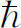
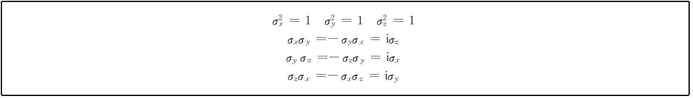
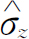

（它们共有4×3＝12个）都可以求出来，所以式（11.4）和式（11.2）完全相同。
（它们共有4×3＝12个）都可以求出来，所以式（11.4）和式（11.2）完全相同。我们现在继续讨论双态系统。上一章末了我们讨论了处在磁场中的自旋1/2粒子。我们用自旋角动量的z 分量为＋ /2的振幅C 1 和自旋分量为－ /2的振幅C 2 描写粒子的自旋态。在前几章中我们曾称这些基础态为｜＋〉及｜－〉，现在我们再回过来用这种记号法。虽然有时我们会觉得交替使用｜＋〉或｜1〉，｜－〉或｜2〉较为方便。
在上一章中我们看到，当磁矩为μ 的自旋1/2粒子在磁场B ＝（B x ，B y ，B z ）中，振幅C ＋ （＝C 1 ）和C － （＝C 2 ）由下列微分方程联系起来：
换言之，哈密顿矩阵H ij 是
因而，（11.1）式就等同于
这里i 与j 取＋与－（或1与2）。
电子自旋这一双态系统是如此重要，因而书写上使用更简洁的方法是非常有用的。我们现在要离题讲一点数学，告诉你人们通常是怎么写双态系统方程的。可以这样来做：首先，注意哈密顿矩阵中的每一项都正比于μ 以及B 的某些分量，于是我们可以——纯粹形式地 ——写出
这里毫无新的物理内容，上式只意味着，系数
（它们共有4×3＝12个）都可以求出来，所以式（11.4）和式（11.2）完全相同。
让我们看看它们必须取什么值。从B z 开始，由于B z 只出现在H 11 与H 22 中，只要取
那就一切都解决了。我们常常将矩阵H ij 写成这样一个小表格：
对一个处在磁场B z 中的自旋1/2粒子的哈密顿来说，上式就和
一样。用同样方法，我们可以把系数 写成矩阵
看一下B x 的系数，我们得到σ x 的各项必须是
或简写为
最后，看一看B y ，我们得到
或
有了这3个σ 矩阵，式（11.2）就与式（11.4）恒等。我们将x ，y ，z 作为σ 的上标，指明哪个σ 与哪个B 的分量相对应，而将下标留给i 与j 。但通常i ，j 略去不写——因为不难想象它们是在哪儿——而把x ，y ，z 写作下标。这样式（11.4）就写成
因为σ 矩阵非常重要（它们一直被专家们使用着），我们在表11-1中将它们汇总在一起。（任何打算从事量子物理学工作的人都一定得记住它们。）人们也以发明这些矩阵的物理学家的名字将它们命名为泡利自旋矩阵 。
在这张表上我们还多加了一个2×2矩阵，如果我们要处理一个含有带同样能量的两个自旋态的系统，或者想选择一个不同零点能量的话，就需要那样一个矩阵。在这些情况下我们必须在式（11.1）的第一个方程中加上E 0 C ＋ ，而在第二个方程中加上E 0 C － 。如果定义单位矩阵 “1”为δ ij ，
表11-1 泡利自旋矩阵
并将式（11.8）改写为
就能把以上两项包括在我们的新记法中。通常不用说明就会明白 任何像E 0 那样的常数都自动地与单位矩阵相乘，于是上式简写为
自旋矩阵之所以有用，其中一个理由是，任何 2×2矩阵都能用它们表示。任何一个你能写出的这种矩阵中都有4个数，比方说
它们总可以写为4个矩阵的线性组合。例如：
有许多这种组合法，但有一种特殊方法是将M 看作一定量的σ x 加一定量的σ y ，等等，形如

这里“数量”α ，β ，γ 与δ 一般来说可以是复数。
既然任何2×2矩阵都可用单位矩阵与σ 矩阵表示，我们就有了处理任何 双态系统所需要的一切了。不管双态系统是什么——氨分子、品红染料或者其他任何东西——哈密顿方程都可用σ 矩阵写出。虽然在电子处于磁场中这种物理条件下可以看出σ 矩阵具有几何意义，但也可以将它们看作只是些适用于任何双态问题的有用矩阵而已。
例如，在某种看法下，可以把质子与中子看作为处于两种状态之一的同一种粒子，我们说核子 （质子或中子）是双态系统——在这种情况下，两个态是就关系到它们是否带电荷。照这种观点，态｜1〉可表示质子，而态｜2〉可表示中子。人们便说核子有两个“同位旋”状态。
由于我们要使用σ 矩阵作为双态系统量子力学的“算术”，所以让我们很快地复习一下矩阵代数的一些规则。所谓两个或几个矩阵的“和”的意义在式（11.4）中很明显。一般说，如果将两个矩阵A 与B “相加”，那么它们的“和”C 就意味着其每一项C ij 由下式给出：
C 的每一项是A 与B 中同样位置的两项之和。
在§5-6中我们已接触到矩阵“积”的概念。这个概念也同样用于处理σ 矩阵。一般而言，两个矩阵A 和B （按此顺序）的“积”定义为矩阵C ，它的元素是
这是从A 的第i 行及B 的第j 列取出相应一对元素相乘然后求和。如果矩阵写成图11-1那样的表格形式，就有一个求出积矩阵各项很好的“系统”。假定你要计算C 23 ，将你的左手食指顺着A 的第二行 依次移动，右手食指顺着B 的第三列向下 依次移动，将移动时所遇到的每一对相乘，再相加。我们已试着在图中说明具体做法。
图11-1 两个矩阵相乘
当然，对2×2矩阵来说特别简单。例如，如果我们将σ x 乘σ x ，就得到
这正是单位矩阵1。或举另一个例子，我们来算出σ x σ y ：
参照表11-1，可看出乘积正是i 乘上矩阵σ z 。（请记住一个数与矩阵相乘，就是该数与矩阵的每一项相乘。）因为一次求两个σ 矩阵的积很重要，也相当有趣，所以我们已将这些积全部列在表11-2内。你可以像求 及σ x σ y 那样求出它们来。
表11-2 自旋矩阵的积
关于这些σ 矩阵，还有一个十分重要而有趣之点。如果愿意，我们可以设想3个矩阵σ x ，σ y 及σ z 类似于某个矢量的3个分量——有时把它称为“σ 矢量”——而记为σ 。它确实是个“矩阵矢量”或“矢量矩阵”。它是3个不同的矩阵，每一个矩阵分别和x ，y 或z 轴中的一个相联系。由此，我们可把系统的哈密顿以在任何坐标系内都成立的简洁形式写出：
虽然这3个矩阵是在这样的表示中写下的，在该表示中“朝上”与“朝下”是对z 轴而言的（因而σ z 特别简单）。但我们也可以求出在其他某个表示中这些矩阵的形式。尽管需要作许多代数运算，你能够证明这些矩阵之间的变换就像一个矢量的分量的变换一样。（然而，我们此刻不想去操心证明这点，如果你愿意，你可以验证这一点。）你们可以在不同的坐标系下应用σ ，就仿佛它是个矢量一样。
你们记得在量子力学中H 与能量有关。事实上，在只有一个态的简单状况下，H 正好等于能量。即使对电子自旋的双态系统，当我们将哈密顿写成式（11.13）那样时，它非常像一个磁矩为μ 的小磁体处在磁场B 中的能量的经典 公式。在经典物理学中，我们有
这里μ 是物体的性质，B 是外磁场。如果用哈密顿代替经典的能量，用矩阵μ σ 代替经典的μ ，我们可以看出式（11.14）能够转换为式（11.13）。于是，根据这种纯粹形式的代换，我们将结果解释为矩阵方程。有时人们说，对经典物理中的每个量，量子力学中都有一个矩阵与之对应，实际上更确切的说法是哈密顿矩阵对应着能量，而任何可以通过能量来定义的量都有着相应的矩阵。
例如，磁矩可以通过能量来定义，只要指出它在外场B 中的能量是－μ•B． 这就定义 了磁矩矢量μ 。然后我们考察处在磁场中的真实（量子）客体的哈密顿的公式，并试着去辨别这些矩阵与经典公式中相对应的各种物理量。这就是有时可以找到和经典物理量对应的量子力学物理量的技巧。
如果愿意的话，你们可以试试看去弄清一个经典矢量怎么会跟一个矩阵μ σ 相等，或许你们会发现一些东西——但切勿为之太伤脑筋。那个想法不妥当——它们并不相等 。量子力学是另一种类型的描述世界的理论。只是碰巧存在着一定的对应关系，但这至多是记忆的工具——用它来帮助记忆。就是说，当你学习经典物理时，你记住了式（11.14）；因而如果你记得对应关系μ →μ σ ，你就容易记住式（11.13）了。当然，自然界遵循量子力学，而经典力学只是近似；因此，毫不奇怪在经典力学中会有量子力学定律的某种影子——量子力学定律正是经典力学的基础。用任何直接方式从影子重建原物是不可能的，但影子确实会帮助你记住原物像什么样子。式（11.13）是真理，而式（11.14）是影子。因为我们先学习经典力学，所以希望能由它得到量子力学公式，但这样做时根本不存在什么肯定成功的方案。我们必须一再回到真实世界以发现正确的量子力学方程。如得到的方程跟经典物理中的某个东西相像，就是我们的幸运。
如果上述有关经典物理与量子物理之间关系的告诫显得太啰嗦，并且在你们看来都是毋庸待言的自明之理，那就请你们原谅这位教授的条件反射吧，他通常是对进研究生院前并没听说过泡利自旋矩阵的学生讲授量子力学。这些学生总像是抱着某种希望，希望量子力学是他们几年前已透彻学过的经典力学逻辑发展的结果。（或许他们想避免不得不学习新东西这件事吧。）你们只是在几个月前学习了经典公式（11.14）——并且接着又被提醒说它并不是合适的公式——所以你们大概不会很不愿意将量子力学公式（11.13）来作为基本的真理吧。
当我们正讨论数学记号这一题目时，我们想再描写一下另一种 书写方法，这种写法很常用，因为它非常简洁。它直接由第8章所引进的记法得到。假定我们有个处在随时间变化的状态｜ψ （t ）〉的系统，我们可像在式（8.34）中所做的那样把系统于时刻t ＋Δt 在态｜i 〉的振幅写成
矩阵元〈i ｜U （t ＋Δt ，t ）｜j 〉是在时间间隔Δt 内基础态｜j 〉转变为基础态｜i 〉的振幅。于是我们可以写出下式来定义 H ij ：
我们已经证明各振幅C i （t ）＝〈i ｜ψ （t ）〉之间由下列微分方程组相联系：
假如明确写出振幅C i ，那么上式成为
但矩阵元H ij 也是振幅，可以将它写为〈i ｜H ｜j 〉；所以我们的微分方程就变为这样：
我们看到（－i / ）〈i ｜H ｜j 〉dt 就是在H 所描写的物理条件下态｜j 〉在时间dt 内将“产生”出态｜i 〉的振幅。（所有这些都已隐含在§8-4的讨论之中。）
现在依照§8-2的思路，我们可以丢掉式（11.17）中的公共项〈i ｜——因为此式对任何态｜i 〉都成立——而把该方程简写为
或再进一步，我们还可去掉j 而写为
在第8章里我们曾指出，表式写成这种形式时，在H
｜j
〉或H
｜ψ
〉中的H
称为算符
。从现在开始我们要给算符戴上一顶小帽子（∧）来提醒你这是
个算符而不是个数字。我们以后写成
。虽然两个方程式（11.18）及（11.19）和式（11.17）或（11.15）的意义完全相同
，我们却可以用不同的方式看待
它们。例如，我们可以这样来描写式（11.18）：“态矢量
｜ψ
〉对时间的导数乘以i
等于将哈密顿算符
 作用于每个基础态后，乘上ψ
在某一态j
中的振幅〈j
｜ψ
〉，然后再对所有j
求和所得的结果。”而式（11.19）可以这样来描写：“态｜ψ
〉对时间的导数（乘上i
）等于用哈密顿算符
作用在态矢量｜ψ
〉上所得到的结果。”这只是对式（11.17）中内容的一种简短说法而已，但是，你们会看到，那是十分便利的。
作用于每个基础态后，乘上ψ
在某一态j
中的振幅〈j
｜ψ
〉，然后再对所有j
求和所得的结果。”而式（11.19）可以这样来描写：“态｜ψ
〉对时间的导数（乘上i
）等于用哈密顿算符
作用在态矢量｜ψ
〉上所得到的结果。”这只是对式（11.17）中内容的一种简短说法而已，但是，你们会看到，那是十分便利的。
如果我们高兴，还可以把“抽象”的思想再往前推进一步。方程式（11.19）对任何状态 ｜ψ 〉都正确。等式左边的i d/dt 也是个算符——它是“对t 求导再乘上i ”的运算。所以式（11.19）也可以认为是算符之间的一个方程，即算符方程
哈密顿算符（除一个常数因子之外）作用到任何态上所得的结果与d/dt 的作用相同。请记住这个方程——像式（11.19）一样——并非 算符恰与i d/dt 是恒等运算 的表述。这些方程是自然界量子体系的动力学定律，即运动定律。
为用这些概念做些练习，我们给你证明可以换一种方法得到式（11.18）。你们知道，我们可以用一个态｜ψ 〉在某一组基础态上的投影来表示这个态［参见式（8.8）］，
态｜ψ 〉怎样随时间变化呢？只要求它的导数：
设基础态｜i 〉不随时间变化（至少我们总是把它们取为确定不变的态），但振幅〈i ｜ψ 〉是个可能变化的数。于是式（11.21）变为
从式（11.16）可以知道d〈i ｜ψ 〉/dt ，所以我们得到
这就是式（11.18）。
所以我们有多种看待哈密顿的方法。可以把一组系数H ij 看作为只是一组数字，或把哈密顿算符看作“振幅”〈i ｜H ｜j 〉，或看作“矩阵”H ij ，或看作“算符” 。它们全都表示同一事物。
现在让我们回到双态系统上来。假如我们用σ 矩阵（带有适当的数值系数，如B x 等等）表示哈密顿，我们也能把 明确地看作振幅〈i ｜σ x ｜j 〉，或者，简言之就是算符 。如果使用算符的概念，我们可以把磁场中的态｜ψ 〉的运动方程写成
当我们想要“使用”这样一个方程时，通常必须用基矢表示态｜ψ 〉（这就像要用特定的数值来表示空间矢量就一定要求出空间矢量的分量一样）。所以我们通常把式（11.23）写成展开式：
现在你们会明白为什么算符概念是如此简洁了。为了利用式（11.24），我们要知道 算符作用在各个基础态上会得到什么结果。让我们求出它们来。假定我们求 ，它是某个矢量｜？〉，但是，是什么矢量呢？别急，让我们在 上左乘〈＋｜，那就有
（利用表11-1），所以我们知道
现在，让我们在 上左乘〈－｜，我们得到
所以
只有一个态矢量同时满足（11.25）和（11.26）两式，这就是｜＋〉。于是我们发现
利用这样的论证，你们很容易证明σ 矩阵的所有性质可以用表11-3所列的一组法则以算符记号来描写。
表11-3

如果我们求σ
矩阵的乘积，它们就变为求算符的乘积。当两个算符作为乘积一起出现时，你们要先将最靠右的算符进行运算。例如，对
，我们必须理解为 ，由表11-3，求得
，所以
，由表11-3，求得
，所以
而对任何数——譬如i——只要从算符中移出就可以了（算符只作用在态矢量上），所以式（11.28）与下式相同：
如果对 作同样运算，你们就得到
查一下表11-3，你们会看出 作用在｜＋〉或｜－〉上正好得到 作用其上的结果再乘以－i。所以我们可以说 的作用与i 的作用相同，并把这个表述写为算符方程：
注意这个方程与表11-2中所列的矩阵方程之一相同。所以我们又一次见到了矩阵观点和算符观点之间的对应性。因而表11-2中的每个方程都可以看作是关于σ 算符的方程。你们可以验证一下它们确实可由表11-3得到。在作这些验证时，最好不要 去管σ 或H 这些量究竟是算符还是矩阵。不论从哪种观点来看，所有的方程都相同，所以表11-2既适用于σ 算符，也适用于σ 矩阵，随你的便。
现在我们可用多种形式写出双态方程。例如可写为
也可写为
它们表示同一回事。对处在磁场中的一个自旋1/2粒子，哈密顿H 由式（11.8）或式（11.13）给出。
如果磁场沿z 方向，那么——正像到现在为止我们已屡次见到的那样——解就是态｜ψ 〉（不管它是什么）绕着z 轴进动（就好像你取一个物体，使它整个地绕着z 轴旋转一样），它的进动角速度等于场强乘以μ / 的两倍。当然，当磁场沿其他任何方向时，情况同样如此，因为物理规律与坐标系无关。假如有这样一种状况，磁场以复杂的方式随着时间变化，那么我们可以用下述方式加以分析。假定开始时自旋沿着＋z 方向，而磁场沿x 方向。自旋就开始转向。接着如果x 方向磁场撤消，自旋就停止转向。如果这时加上一个z 方向磁场，自旋就绕着z 轴进动，等等。所以根据磁场按时间变化的方式，你可以描绘出终态是什么——它将指向哪个轴的方向。然后你就可用第10章（或第6章）的投影公式变换回到原先的对于z 轴的｜＋〉态与｜－〉态来表示这个态。如果终态的自旋的指向沿着（θ ，Φ ）方向，它就会有一个朝上的振幅 和一个朝下的振幅 。这就解决了任何问题。这是微分方程解法的语言描述。
刚才所述的求解方法相当普遍，可以处理任何双态系统 。我们不妨取氨分子为例子——其中还包括电场的效应。假如我们用态｜Ⅰ〉及｜Ⅱ〉描写系统，方程式（9.38）和（9.39）就写成：
你们会说：“不对，我记得里面还有个电场E 0 。”不错，但我们已移动了能量的原点，使E 0 为0。（通过使两个振幅改变同样的因子 总可做到这一点——为了去掉任何常数能量。）既然相应的方程总有相同的解，那我们实在不必再去解一次方程。假如我们看一下这些方程，再看一下方程式（11.1），那我们就可进行下述判断。我们可称｜Ⅰ〉为态｜＋〉，｜Ⅱ〉为态｜－〉。这并不意味着 我们把氨分子在空间排列起来，也不是｜＋〉及｜－〉与z 轴有任何关系。这纯粹是人为的。我们有一个人造的空间，可以称为“氨分子表示空间”或别的什么名称——一个三维的“构图”，其中的“朝上”对应于分子处在｜Ⅰ〉态，而沿着假想的z 轴“朝下”则表示分子处在｜Ⅱ〉态。这样，对这些方程就可作如下的理解。首先，你知道哈密顿可用σ 矩阵表示为
或者，换一种方式说，式（11.1）中的μ
B
z
对应于式（11.32）中的－A
，而μ
B
x
对应于－μ
ε
。于是，在我们的“模型”空间中，有一个沿z
方向的恒定B
场。如果我们有一个随时间而变的电场 ，那我们就有一个沿x
方向按比例变化的B
场。所以，处在一个z
方向分量保持不变而x
方向振荡分量的磁场中的电子的行为，数学上类似于并且完全对应于一个处在振动电场中的氨分子的行为
。遗憾的是，我们没有时间进一步讨论这种对应的详情，也没有时间讨论任何技术细节。我们只想指出，所有
双态系统，都与一个在磁场中进动的自旋1/2粒子相类似。
，那我们就有一个沿x
方向按比例变化的B
场。所以，处在一个z
方向分量保持不变而x
方向振荡分量的磁场中的电子的行为，数学上类似于并且完全对应于一个处在振动电场中的氨分子的行为
。遗憾的是，我们没有时间进一步讨论这种对应的详情，也没有时间讨论任何技术细节。我们只想指出，所有
双态系统，都与一个在磁场中进动的自旋1/2粒子相类似。
还有另外许多双态系统研究起来很有趣，我们要谈的第一个新系统是光子。为了描写一个光子，我们必须首先给出它的动量矢量。对自由光子，频率由动量决定，所以我们无须再说它的频率是多少。然而，除动量外我们还须考虑一个称为偏振的性质。设想有个确定单色频率的光子向着你射来（频率在这一讨论中始终保持不变，所以没有许多种不同的动量态）。就有两个偏振方向。在经典理论中，光可以描写为具有（譬如说）一个水平振动的电场和一个垂直振动的电场，这两类光称为x 偏振光及y 偏振光。光也可能沿其他某个方向偏振，这可以由沿x 方向的场与沿y 方向的场的叠加构成。或者，如果你使x 分量与y 分量之间的相位相差90°，就会得到一个旋转的电场——这样的光是椭圆偏振光。（这只不过是对我们在第1卷第38章所学过的偏振光经典理论的简单回顾。）
现在假设我们有单个 光子——只是一个。这里不存在可以用同样方法讨论的电场，我们所有的只是一个光子 。但是光子必定有经典偏振现象的类似的性质。必定存在至少两种不同的光子。起先你可能会以为应当有无限多种——因为电矢量可以指向各种方向。但我们可以把光子的偏振作为双态系统来描写。光子可以处在｜x 〉态或处在｜y 〉态。｜x 〉态指的是在经典物理学中是 沿x 方向振动的一束光线里的每个光子的偏振态。而｜y 〉态指的是沿y 方向振动的光束中的每个光子的偏振态。 (2) 我们可以把｜x 〉与｜y 〉作为具有指向你的给定动量——我们将称该指向为z 方向——的光子的基础态。所以有｜x 〉与｜y 〉两个基础态，它们就是描写任何光子所需要的一切。
举例来说，如果我们有块偏振片，其取向能让沿x 轴振动的偏振光通过，我们往这偏振片射去一个我们已知道是｜y 〉态的光子，它将被偏振片吸收。假如射去一个我们知道是｜x 〉态的光子，它将径直通过偏振片后仍旧是｜x 〉。如果我们取一块方解石，它让一束偏振光分解为一个｜x 〉光束及一个｜y 〉光束，这块方解石完全类似于把一束银原子分裂为｜＋〉及｜－〉两种状态的施特恩-格拉赫装置。所以先前我们对粒子和施特恩-格拉赫装置所做的每一件事都能重新用在光和方解石上。那么，当光透过一块透振方向角度为θ 的偏振片时，会出现什么情况呢？是否变成另一种状态？是的，它的确是 另一种状态。我们称偏振片的透振轴为x ′，以便跟我们的基础态的轴区分开来。参见图11-2。射来的光子将处在｜x ′〉态。但任何态都可以用基础态的线性组合来表示，这里，组合的公式是
这就是说，如果光子通过一块透振方向（和x 轴的）夹角为θ 的偏振片后，它仍可以（比方说，用一块方解石）分解为｜x 〉束与｜y 〉束。或者，如果愿意，你可以只在想象中把它分解为x 分量与y 分量。无论用哪种方法，你都将得到处在｜x 〉态的振幅是cosθ ，处在｜y 〉态的振幅是sinθ 。
图11-2 与光子的动量矢成直角的坐标
现在我们问这一问题。假设一个光子通过角度为θ 的偏振片后得到沿着x ′方向振动的偏振光，而后到达一块角度为零的偏振片——如图11-3所示，那会发生什么情况呢？它将有多大的概率通过？答案如下：当它通过第一片偏振片后，它一定处在｜x ′〉态，第二片偏振片只让｜x 〉态的光子通过（吸收｜y 〉态的光子）。所以我们要问，出现处在｜x 〉态光子的概率有多大？我们可从｜x ′〉态的光子在｜x 〉态的振幅〈x ｜x ′〉的绝对值的平方得到此概率。〈x ｜x ′〉是什么？只要把式（11.33）左乘以〈x ｜就得到
图11-3 透振方向间成θ 角的两个偏振片
而从物理意义得知，〈x ｜y 〉＝0——如果｜x 〉和｜y 〉是基础态的话就必须 如此——而〈x ｜x 〉＝1。所以得到
概率就是cos2 θ 。举例来说，如果第一片偏振片角度为30°，那么一个光子有3/4的机会得以穿过，而有1/4的机会光子被偏振片所吸收而将它加热。
现在我们来看一下在同样情况下按经典理论会发生什么。我们有一束光，它的电场以不定的方式变化着——我们就说这束光是“非偏振”的。当它通过第一片偏振片后，电场沿x
′方向振动，而大小为
，我们可以在如图11-4那样的图上把电场画成峰值为
0
的振动矢量。当光到达第二片偏振片时，只有电场的x
分量
0
cosθ
得以通过。光强
与电场的平方成正比，因此与
成正比。所以从第二片偏振片出射时能量比进入时的能量减弱一个cos2
θ
因子。
图11-4 电矢量
的经典图像
经典图像和量子图像给出了相同的结果。如果你往第二片偏振片注射100亿个光子，每个光子通过的平均概率比方说是3/4，那你就可以指望100亿光子中有3/4得以通过。类似地，它们所携带的能量也只是你注入能量的3/4。经典理论不说事件的统计意义——它只是说通过的能量正好是你送入的能量的3/4。当然，如果只有一个光子的话，这就不可能了，不存在3/4个光子那样的东西。它要么整个 在那里，要么根本不在那里。量子力学则告诉我们，有3/4的机会 它整个 在那里。两种理论的关系是清楚的。
那么，对另一类偏振呢？比方说右旋圆偏振又如何？在经典理论中，右旋圆偏振有着大小相等而相位差为90°的x 振动分量及y 振动分量。在量子理论中，右旋圆偏振（RHC）光子在偏振态｜x 〉及｜y 〉有相等的振幅，而振幅 间相位差为90°。称RHC光子为｜R 〉态，左旋圆偏振（LHC）光子为｜L 〉态，我们可以写出（参见第1卷§33-1）
因子 是为了使态归一化而引进的。用这些态并利用量子理论的定律，你可以计算任何你想研究的滤光或干涉效应。如果愿意你也可以选择｜R 〉与｜L 〉为基础态，而用它们表示任何状态。只要先证明〈R ｜L 〉＝0——取上式中第一个方程的共轭式［参见式（8.13）］，然后乘以第二个方程，就可证明这一点。你可以将光分解为x 向振动和y 向振动，或分解为x ′向振动和y ′向振动，也可以分解为右旋圆偏振及左旋圆偏振等作为基础态。
作为一个例子，我们来试一下把公式掉转过来。能不能把态｜x 〉表示为右旋态与左旋态的线性组合呢？可以，这就是
证明：将式（11.34）中的两式相加与相减即可。很容易从一种基础态变到另一种基础态。
然而，必定会出现一个奇特的情况。如果光子是右旋圆偏振的，它不应跟x 及y 轴有任何关系。如果我们从一个绕光子飞行方向转过某一角度的坐标系来看同一个现象的话，光应当仍然是右旋圆偏振的，对左旋圆偏振光，情况也一样。右旋和左旋圆偏振光对任何转动都不变，它们的定义与x 方向怎么选择无关（只是光子的方向业已给定）。定义左、右旋不需要定任何坐标轴，这岂非好事，这要比取定x 和y 方便多了。但另一方面，当你把右旋与左旋加在一起时，可以求得x 方向，这不很奇怪吗？如果“右”旋和“左”旋丝毫不依赖于x ，那我们把它们重新放到一起时又怎么能得到x ？在某种程度上我们可以这样来回答上述问题：在x ′，y ′坐标系中写出表示RHC偏振光子的态矢量｜R ′〉，在这个坐标系中，你可以写出：
这样一个态在x ，y 坐标系中又显得怎样呢？只要用式（11.33）代｜x ′〉并用相应的表式代｜y ′〉——我们未曾将它写出来，但它就是（－sinθ ）｜x 〉＋（cosθ ）｜y 〉。于是就有
第一项正是｜R 〉，而第二项是e －iθ ；我们的结果就是
态｜R ′〉与｜R 〉除了一个相位因子e －iθ 外完全相同。如果你对｜L ′〉作同样的计算，就会得到 (3)
现在你看到发生了什么情况。如果我们将｜R 〉与｜L 〉相加，就得到跟｜R ′〉与｜L ′〉相加不同的结果。譬如说，一个x 偏振光子是［式（11.35）］｜R 〉和｜L 〉的和，但一个y 偏振光子则是把｜R 〉的相位后移90°，把｜L 〉的相位前移90°后的两者之和。这正是在特殊的角度θ ＝90°的情况下对｜R ′〉与｜L ′〉求和所得的结果。这是正确的。在带“撇”的参考系中的x 偏振跟原来参考系的y 偏振相同，所以，认为圆偏振光子在任何坐标系中看来都相同这种说法不完全正确。它的相位 （右旋与左旋圆偏振态的相位关系）始终保持着x 方向的关系。
我们现在要来描写奇异粒子世界中的一个双态系统——一个量子力学对之作出了最令人惊异的预言的系统。要完全地描述这一系统，我们就得涉及到许多有关奇异粒子的知识，所以，很遗憾，我们将不得不说得简短些。我们只能对某个发现的获得过程作出大致的描绘——把所包括的推理方式告诉你们。这是从盖尔曼（Gell-Mann）和西岛（Nishijima）发现奇异性 概念以及新的奇异性守恒 定律开始的。正是当盖尔曼和佩斯（Pais）分析这些新概念所得的结果时，他们提出了我们正要描写的一个最令人惊异的现象的预言。然而，首先我们得谈一点“奇异性”。
我们必须从核粒子之间的所谓强相互作用 开始。这种作用是强核力相互作用的根源，它和相对较弱的电磁相互作用不同。作用“强”指的是，如果两个粒子靠得足够近而产生相互作用，它们的作用非常强烈，并且很容易产生其他粒子。核粒子之间也存在着所谓的“弱相互作用”，由此也会发生某些现象，诸如β 衰变，但是用核的时间尺度来衡量，发生作用总是非常缓慢——弱作用的大小要比强作用弱许许多多数量级，甚至比电磁相互作用还弱得多。
当人们用大型加速器对强相互作用进行研究时，惊奇地发现有些“应当”发生的事——预期会发生的事——却没有发生。譬如，在某些相互作用中，某种类型的粒子没有像原先预料的那样出现。盖尔曼和西岛注意到，如果提出一条新的守恒定律——奇异性守恒 ，这许多奇异现象就能马上得到解释。他们提出，每个粒子都具有一种新的属性——他们称之为“奇异”数，而在任何强相互作用过程中，“奇异性的数量”是守恒的。
举例来说，假定一个高能负K介子（譬如说带有几十亿电子伏特能量）与一个质子相碰撞。这样的相互作用会产生许多别的粒子：π 介子，K介子，Λ粒子，Σ粒子，即列于第1卷表2-2中的各种介子或重子。人们观察到只出现某些组合 ，另外一些组合则从不出现。已经知道某些守恒定律在这里是起作用的。首先，能量和动量总是守恒的，事件后的总能量和总动量必定与事件前的相同。其次，有电荷守恒，这就是说，所产生的粒子的总电荷必定等于原有粒子所带的总电荷。在我们这个K介子与质子相碰撞的例子中，以下的反应确实 发生了：
由于电荷守恒，我们永远不会得到
我们也知道，重子数 是守恒的。反应后的 重子数必定等于反应前的 重子数。在这条定律中，重子的反粒子 作为一个负 重子来计算。这意味着我们可以——也确实 ——见到这样的反应：
（这里 是反质子，它带一个负电荷。）但是我们从没有 见到
（即使能量很大也是如此），因为上式中重子数不守恒。
然而，这些定律不能 解释这样一件奇特的事实，即下列反应：
也从未观察到过，而这些反应初看起来跟式（11.38）或式（11.40）的某些反应并无多大的差别。对此的解释是奇异性守恒。每个粒子都有一个数，即奇异数 S ，而在任何强 相互作用中，都存在着这样一条定律：反应后 的总奇异数必定等于反应前 的总奇异数。质子和反质子 ，中子和反中子 ，以及π 介子（π ＋ ，π 0 ，π － ）的奇异数全都为0 ，K＋ 与K0 介子奇异数为＋1；K－ 与 （K0 的反粒子），Λ0 与Σ粒子（＋，0，－）奇异数为－1。还有一种粒子 粒子（“ξ”的大写）的奇异数为－2，或许还有其他奇异数尚不知道的粒子。我们已把这些奇异数列在表11-4中。
表11-4 强相互作用粒子的奇异数
注：π － 为π ＋ 的反粒子（反之亦然）。
让我们看看在已写出的某些反应中，奇异性守恒是怎么起作用的。如果开始时是一个K－ 和一个质子，总的奇异数为（－1＋0）＝－1。奇异性守恒要求反应后 产物的奇异数的总和也必须是－1。你们看到式（11.38）及（11.40）满足这一要求。但在式（11.42）的反应中，右边的奇异性在三种情况中都是0 。这些反应前后奇异性不保持守恒，因而不会发生。为什么？没人知道，没人知道得比我们刚才告诉你的有关情况更多一些。自然界正是以这种方式运行着。
现在我们来看一看下列反应：一个π － 撞击一个质子。你也许（比方说）得到一个Λ0 粒子加一个中性K粒子——两个中性粒子。但会得到哪一种中性K？因为Λ粒子有奇异数－1，而π 与p＋ 的奇异数为0，并且由于这是个快速产生的反应，奇异性必定不变。K粒子一定要有奇异数＋1，所以它必须是K0 。这反应是
而
如果在这里用 代替K0 ，右边的奇异数就会是－2，而这是自然界所不允许的，因为左边的奇异数为0。不过， 可以在别的反应中产生，诸如
你们或许会想，“这完全是些废话，因为你怎么知道 它是 还是K0 ？它们看起来完全相同。它们互为反粒子，它们有完全相等的质量，而电荷又都是0。你们怎么来区分它们？”回答是通过它们 所发生的反应。例如，一个 可以跟物质作用产生一个Λ粒子，如
但K0 却不行。当K0 与普通的物质（质子和中子）相互作用时，不会 使它产生Λ粒子 (5) 。所以K0 和 之间的实验鉴别就是它们之中有一个能产生Λ粒子，另一个却不能。
这样，奇异性理论的预言之一就是，如果在一个高能π 介子的实验中，产生了一个Λ粒子与一个中性K介子，然后这个 中性K介子撞到另一些物质时决不会产生Λ粒子。实验可以这样来进行，把一束π － 介子射入一个巨大的氢气泡室，π － 的径迹消失了，但另外某个地方出现了一对径迹（一个质子和一个π － ），这表明一个Λ粒子衰变了 (6) （见图11-5）。这样你就知道在某个地方有个你不能看到的K0 。
但你可以利用动量和能量守恒求出它往哪里去。［它后来会衰变为两个带电粒子而显现出来，如图11-5（a）所示。］当K0 向前飞行时，可能跟一个氢核（质子）发生相互作用，也许产生一些别的粒子。而奇异性理论的预言是，它绝不会 在下述类型的简单反应中产生一个Λ粒子：
而 是可以发生这种反应的。这就是说，在气泡室中，一个 可以产生如图11-5（b ）所描画的事件——其中的Λ0 由于衰变而被看到，但K0 却不能产生这种过程。这就是我们故事的第一部分，这就是奇异性守恒。
不过，奇异性守恒不是完美无缺的 。奇异粒子可以发生极缓慢的衰变——衰变时间长到约10－10 s (7) ，这时奇异性不再 守恒，这些衰变称为“弱”衰变。例如，K0 衰变为一对寿命为10－10 s的π 介子（＋及－）。事实上，这是首次见到K粒子的方法。注意衰变反应
图11-5 在氢气泡室观察到的高能事件：（a）一个π － 介子与一个氢核（质子）相互作用产生一个Λ0 粒子和一个K0 介子。两个粒子都在气泡室中衰变。（b）一个 介子和一个质子相互作用产生一个π ＋ 介子和一个Λ0 粒子，然后Λ0 衰变（中性粒子没有留下径迹，它们推测出的轨迹如图中断续线所示）

中奇异性并不守恒，所以它不可能通过强相互作用而“很快”发生，只可能通过弱衰变过程进行。
注意 也以同样方式 衰变为一个π ＋ 及一个π － 而且也有同样的寿命，
这也是一个弱衰变，因为它奇异性并不保持守恒。有一条原理：对任何反应，总对应地存在一个用“反物质”代替“物质”的反应，反之亦然 。由于 是K0 的反粒子，它应当衰变为π ＋ 与π － 的反粒子，但π ＋ 的反粒子是π － 。（或者，如果你乐意，反过来说也可以。结果发现对π 介子来说，你们称哪一个为“物质”都无所谓。）所以作为弱衰变的一个结果，K0 和 可以变为同样的最终产物。当我们通过衰变来“见到”它们时——如同气泡室中那样——它们看上去是同一种粒子。只是它们的强相互作用不同。
我们终于可以来描述盖尔曼和佩斯的工作了。他们首先注意到，既然K0 及 都能转变成两个π 介子的状态，必定存在某个K0 转变为 的振幅，并且也有一定 转变为K0 的振幅。像在化学中所做那样写出反应方程式，有
这些反应意味着，每单位时间内，K0 通过弱相互作用衰变成两个π 介子再转变为 有一定的振幅，这振幅写成 乘以〈 ｜W ｜K0 〉。对于逆反应来说，也有相应的振幅〈K0 ｜W ｜ 〉。由于物质与反物质的行为完全相同，这两个振幅在数值上相等，我们把它们都称为A ，
盖尔曼和佩斯说，这里出现一个有趣的情况。人们一向所说的世界的两个不同的状态——K0 与 ——实际上应当被看作为是一个 双态系统 ，因为从一个态到另一个态有一定的振幅。当然，做完全的处理时，必须处理两个以上的态，因为也还存在着一些像两个π 介子的态，等等；但是既然他们主要对K0 与 的关系感兴趣，就不必把事情搞得太复杂，而可以作双态系统的近似。其他态在某种程度上已经考虑到，它们的效应已隐含在式（11.44）的振幅中。
因而盖尔曼和佩斯把这个中性粒子作为一个双态系统来进行分析。他们首先把｜K0 〉和 〉态取为两个基础态。（这样，事情非常像氨分子的情况。）这样，中性K粒子的任何态｜ψ 〉就可用它处在两个基础态的振幅来描写。我们将称这两个振幅为
下一步就是要写下这个双态系统的哈密顿方程。如果K0 与 之间没有耦合，方程就只是
但由于有 转变为K0 的振幅〈K0 ｜W ｜ 〉存在，所以应当还有一项
加在第一个方程的右边。类似地，AC ＋ 项应该加到C － 随时间变化的方程中去。
但还不止这些。当考虑到双π 介子效应时，还存在K0 通过以下过程变为自身的附加振幅，

我们将用〈K0 ｜W ｜K0 〉来表示的这个附加振幅，它正好等于振幅〈 ｜W ｜K0 〉，因为对于K0 和 来说，它们变为一对π 介子与由一对π 介子变回自身的振幅是完全相同的。如果需要，可以详细写出这个论证。首先，我们写下 (8)
由于物质和反物质的对称性，
由此得到〈K0 ｜W ｜K0 〉＝〈 ｜W ｜K0 〉，以及〈 ｜W ｜K0 〉＝〈K0 ｜W ｜ 〉，这就是我们前面所说过的。不管怎么说，两个都等于A 的附加振幅〈K0 ｜W ｜K0 〉和〈K0 ｜W ｜ 〉，应当包括在哈密顿方程中。第一个给出的一项AC ＋ 加在dC ＋ /dt 的方程的右边，第二个给出的是加在dC － /dt 的方程右边新的一项AC － 。通过这样论证，盖尔曼与佩斯推断 系统的哈密顿方程应当是
现在我们必须对前几章中所说的作一些纠正：像〈K0 ｜W ｜ 〉和〈 ｜W ｜K0 〉这样两个互相逆转的振幅总是互为复共轭。这只有在讨论中不发生衰变的粒子时才成立。而如果粒子可以衰变——因此，也就可能“消失”——那么两个振幅不一定是复共轭。所以等式（11.44）并不意味着振幅是实数，事实上，它们是复数。所以，系数A 是复数，这样我们不能把它归到能量E 0 中去。
在经常跟电子自旋以及诸如此类的事情打交道后，我们的主人公看出哈密顿方程组（11.47）意味着存在另外 一对基础态，它们也可用来表示K粒子系统，而且具有特别简单的性质。他们说：“让我们将两个方程相加与相减，并且以E 0 为零点测量所有有关能量，并使用使 ＝1的能量与时间的单位。”（这是近代理论物理学家常做的事，这样并不改变物理实质，但使方程的形式变得简单些。）他们的结果是：
显然，振幅的组合（C ＋ ＋C － ）与（C ＋ －C － ）互相独立地起着作用。（显然，它们相当于我们早就研究过的定态。）所以，他们断定，用K粒子的另一种不同的表示会更为方便。他们定义两个态
他们说，用K1 与K2 两个“粒子”（就是“态”）来代替K0 和 两个介子也同样可以。（当然，这两个态对应着我们通常称为｜Ⅰ〉与｜Ⅱ〉的态，我们不用老的记号是因为我们现在要用原作者的记号——你们将在物理讨论会上见到的记号。）
但盖尔曼和佩斯做所有这些并不只是为了给粒子起个不同的名称，这里还存在某种令人惊奇的新的物理内容。假设C 1 及C 2 是某个态｜ψ 〉表现为K1 或K2 介子的振幅：
由式（11.49），
于是式（11.48）变为
其解为
显然，这里C 1 （0）和C 2 （0）为t ＝0时的振幅。
这些式子表明如果一个中性K粒子在时刻t ＝0时从态｜K1 〉［这样C 1 （0）＝1而C 2 （0）＝0］出发，那么，在时刻t 的振幅是
注意到A 是复数，不妨取2A ＝α －iβ ，（由于发现2A 的虚部是个负值，我们把它写成负 iβ ）。代入C 1 （t ）后，可以写成
在时刻t 找到K1 粒子的概率是这个振幅的绝对值平方，即e－2βt 。而由式（11.52），在任何时刻找到K2 态的概率为零。这就是说，如果你让一个K粒子起先处在｜K1 〉态，在同一态中找到它的概率将随时间指数下降——但你永远不会在态｜K2 〉中找到它。那么它跑到哪里去了呢？它以平均寿命τ ＝1/2β 衰变为两个π 介子了，实验测得τ 为10－10 s。我们前面说A 是复数时就是为此作了准备。
另一方面，式（11.52）说明，如果使一个K粒子完全处在K2 态，它就将永远这样待下去。当然，这实际上是不对的。实验上观察到这个K粒子衰变为3 个π 介子，不过其速率要比刚才描写过的双π 介子衰变慢600倍。可见，在我们的近似中扔掉了其他一些小项。但只要我们考虑的只是双π 介子衰变，K2 就将“永远”存在下去。
现在继续讲完盖尔曼和佩斯的故事。他们继续考虑在强 相互作用下产生一个K粒子与一个Λ0 粒子 时会发生什么事。由于K粒子必须具有奇异数＋1，所以它产生时必须处在K0 态。这样，在t ＝0时，它既不是K1 也不是K2 ，而是一个混合态 。初始条件是
但是根据式（11.50），这意味着
而由式（11.52）和（11.53），有
注意K0 和 都是K1 和K2 的线性组合。在式（11.54）中，已选定振幅，使t ＝0时 部分由于干涉而相互抵消，只留下K0 态。但｜K1 〉态随时间而变，而｜K2 〉态则不随时间而变 。在t ＝0以后，C 1 与C 2 的干涉将使K0 与 都具有一定的振幅。
所有这些意味着什么？让我们回过去想一下如图11-5所示的一个实验。一个π － 介子产生一个Λ0 粒子和一个K0 介子，这个K0 介子嘟嘟地穿过气泡室中的氢。当它向前跑的时候，它有某种很小的但一定的机会与一个氢核碰撞。起先我们认为奇异性守恒将阻止K粒子在这样的相互作用中产生一个Λ0 粒子。然而，现在我们看到这是不对的。虽然K粒子开始时 为K0 ——它不可能产生一个Λ0 ——但它不会永远 这样。过一会儿，就有一定的振幅 使它跳变到 态。所以我们可以预期沿着K粒子的踪迹有时会看到产生一个Λ0 。这件事发生的机会由振幅C － 给定，而C － 可以与C 1 和C 2 联系起来［倒过来利用式（11.50）］。它们的关系是
当K粒子向前飞行时，它“出现像 那样行为”的概率等于｜C － ｜2 ，其值为
真是个复杂而奇特的结果！
于是，盖尔曼和佩斯就作了这样一个惊人的预言：当一个K0 产生后，它转变为 ——这可由能够产生一个Λ0 来显示——的概率按式（11.56）随时间变化。得出这个预言所用的只是纯粹的逻辑推理和量子力学的基本原理——而根本不知道K粒子的内部机理。由于没有人知道任何有关内部机理的情况，盖尔曼和佩斯最多也只能走到这一步。他们不能给出α 与β 的任何理论值。直到目前也没有能给出这两个值。他们由实验观察到的衰变为两个π 介子的速率能得出一个β 值（2β ＝1010 s－1 ），但关于α ，他们什么也说不出。
在图11-6中我们对于两个α 值画出了式（11.56）的函数的曲线图。你们可以看到图形和α 与β 的比值有很大关系。起先 的概率为0，然后它增大。如果α 大，概率将具有大的振荡。如果α 小，振荡就小，或者没有振荡——概率只平滑地上升至1/4。
图11-6 式（11.56）的函数图像：（a ）设α ＝4π β ，（b ）设α ＝π β （2β ＝1010 s－1 ）
通常，K粒子以接近于光速的恒定速度飞行。图11-6的曲线因而也表示沿着轨迹观察到 的概率，其典型距离为几个厘米。你们可以看出为什么这个预言这样离奇。在产生一个粒子后，它不仅会衰变，也会发生别的事情。有时它衰变，有时它又转变为另一种粒子。它产生某种效应的特征概率随着它的行进而以一种奇特的方式变化着。在自然界里没有别的东西与它相像。而作出这个极为令人惊奇的预言所依据的只是关于振幅干涉的论证。
如果有一个地方，我们有机会以最纯粹的方式检验量子力学的主要原理——振幅的叠加原理是否成立？——这个地方就是这里。尽管这个效应的预言至今已有好几年了，还没有非常清楚的实验判决。只有一些粗略的结果表明α 不是零，不过这种效应确实出现了，这些结果表明α 在2β 和4β 之间。这些都是实验得到的。如能精确地检验一下曲线，看一看在奇异粒子这样的神秘世界中，叠加原理是否确实仍然成立，这将是件非常美妙的事情——对奇异粒子来说，我们不知它们为什么衰变，也不知它们为什么有奇异性。
我们刚才所做的分析方法表明了目前在探索解释奇异粒子的研究中所用的量子力学方法的特点。所有你们可能听到的有关的复杂理论无非都是这类利用叠加原理和同一水平的其他量子力学原理来玩的骗人把戏而已。有些人声称他们已拥有能够计算α 和β ，或者至少在给定β 时能算出α 的理论，但这些理论都是完全无用的。比方说，有个在给出β 后能预言α 值的理论告诉我们α 值应是无穷大。他们开始所用的方程组包括两个π 介子，而后又从两个π 介子回到了一个K0 ，等等。在计算全都完成后，确实得到一对类似于我们这里所写的方程，但是由于两个π 介子的动量有无穷多个状态，对所有这些可能性求积分后得出α 值是无穷大。但是，自然界的α 并不是 无穷大。所以这个动力学理论是错的。在奇异粒子世界中完全 能被预言的现象竟能从你们现在所学到的水平的量子力学原理得出，这实在是非常惊奇的。
我们已经讲完了所有想谈的关于双态系统的问题。在下面几章里我们将继续研究具有更多状态的系统。把我们就双态所得到的概念推广到N 态系统去是直截了当的事，可以按下面这样方式来做。
如果一个系统有N 个不同的态，我们可把任何态｜ψ （t ）〉表示成任何一组基础态｜i 〉（i ＝1，2，…，N ）的线性组合，
系数C i （t ）就是振幅〈i ｜ψ （t ）〉。振幅C i 随时间的变化方式由下列方程组决定
这里能量矩阵H ij 描写问题的物理条件。这看上去和双态系统相同。只是现在i 和j 都必须遍及所有N 个基础态，而能量矩阵H ij ——或者，你愿意称之为哈密顿也可——是带有N 2 个数的N ×N 矩阵。像以前一样， ——只要粒子数守恒——而对角元H ii 是实数。
当能量矩阵为常数（不依赖于t ）时，我们已经求得双态系统的系数C 的一般解。当H 与时间无关时，也不难解出N 态系统的方程组（11.58）。我们仍从寻找振幅全都有相同 时间依赖性的可能解开始。试解
在把这些C i 代入式（11.58）后，导数dC i （t ）/dt 就是（－i/ ）EC i 。消掉所有各项的公共指数因子，得到
这是有N 个未知数a 1 ，a 2 ，…，a N 的N 元线性代数方程组，只有在碰巧时，即所有a i 的系数行列式为零时，才存在一个解。但是并不一定要用这种复杂的方法求解，你们可以随便用什么方法来着手解方程组，你们会发现只有对一定的E 值才能解出它们。（注意E 是我们方程组中唯一可调节的量。）
但如果你们想用规范的方法求解，可以把式（11.60）写为
接下来你们可以利用这条规则（如果你们知道的话），即只有对那些E 值满足下式的方程组才有解，
行列式的每一项正好是H ij ，只是对每个对角元要减去E 。式（11.62）就是
当然，这只是E 的代数方程的一种特殊写法，这个方程是行列式所有各项按一定方式乘积之和。这些乘积将给出E 的所有幂次，直到E N 。
所以我们就有一个等于0的N 次多项式，一般说来它有N 个根。（但要记住其中有些可以是重根，就是说两个或更多的根彼此相等。）不妨称N 个根为
（我们将利用n 表示第n 个罗马数字，这样n 取值为Ⅰ，Ⅱ，…，N 。）其中有些能量可能相等，比方说E Ⅱ ＝E Ⅲ ，但我们仍用不同的名字称呼它们。
方程组（11.60）或（11.61）对每个E 值有一个解。假如将任何一个E 值（譬如E n ）代入式（11.60）并求解a i ，就得到一组属于能量E n 的解。我们将称这组解为a i （n ）。
在式（11.59）中代入这些a i （n ）值，我们就有了某确定能态中处在基础态｜i 〉的振幅C i （n ）。设｜n 〉表示t ＝0时这个确定能态的态矢量，我们可写出
其中
于是有完全确定能量的状态｜ψ n （t ）〉可以写成
或
态矢量｜n 〉描述确定能量状态的位形，而时间相依性被提出在外。这样它们就是常矢量，如果愿意的话，它们可以用来作一组新的基。
每个态｜n
〉都有个性质，——你能很容易地予以证明——当它们被哈密顿算符 作用后，就正好得到E
n
乘以同一个态：
作用后，就正好得到E
n
乘以同一个态：

这样，能量E
n
就是描写哈密顿算符
的特征的一个数值。我们已经见到，一般说，一个哈密顿有几个特征能量。在数学家的术语中，这些数称为矩阵H
ij
的“特征值”。物理学家常称它们为
的“本征值”。（“Eigen”是德文的“特征”或“本征”。）对
的每个本征值——换句话说对每个能量——都存在着确定能量的状态，我们已称它们为“定态”。物理学家通常称｜n
〉为“
的本征态”。每个本征态对应着一个特定的本征值E
n
。
一般来说，态｜n 〉（有N 个）也可用来作为一组基础态。要做到这点，所有的态必须相互正交，意即对其中任何两个态，｜n 〉和｜m 〉，有
如果所有能量都互不相同，那么上式将会自动满足。我们也可以将所有的a i （n ）乘以一个适当的因子，而使所有的态归一化。归一化后对所有的n 就有
当式（11.63）恰巧有两个（或更多）具有相同能量的根时，问题就稍有点复杂。首先，存在两组不同的a i 具有相同的能量，但是它们所给出的态可能不 正交。假设你们通过归一化手续找到了两个具有同样能量的定态——称它们为｜μ 〉及｜ν 〉态。不幸它们不正交，就是说
但我们总可以造出两个新的态，我们称为｜μ ′〉和｜ν ′〉，它们具有相同的能量，而且也正交，即
｜μ 〉和｜ν 〉适当的线性组合可以作出｜μ ′〉和｜ν ′〉，并适当选择系数，使式（11.70）成立。做到这点总是不难的。我们一般假定这点已经做到，因而总认为我们的本征能态｜n 〉全都相互正交。
为提高兴趣，我们来证明当两个定态有不同的能量时它们的确正交。对具有能量E n 的态｜n 〉，我们有
这个算符方程实际上表示有个数字方程。补上没写出的部分，它的意义与下式相同
如果取这式的复共轭，就得
注意振幅的复共轭是逆振幅，所以式（11.73）可以重新写为
因为这个方程对任何 i 成立，它的“简短形式”是
这称为式（11.71）的伴随式 。
现在很容易证明E n 是个实数。将式（11.71）乘〈n ｜就得到
因为〈n ｜n 〉＝1。然后我们将式（11.75）右乘｜n 〉，得
比较式（11.76）和（11.77），显然可见

这意味着E n 是个实数。我们可以擦掉式（11.75）中E 上的星号。
我们终于可以证明不同的能量状态是正交的了。设｜n 〉和｜m 〉是任意的两个有确定能量的基础态。对｜m 〉态应用式（11.75），并乘以｜n 〉，我们得到
但如果用〈m ｜乘以式（11.71），得到
因为这两个等式左边相等，所以右边也相等，
如果E m ＝E n ，上式没告诉我们什么。但如果两个态｜m 〉和｜n 〉的能量不同 （E m ≠E n ），式（11.79）就表明〈m ｜n 〉必定为零，这正是我们要证明的。只要E n 和E m 在数值上不同，两个态必然正交。
————————————————————
(1) 在第一次阅读这本书的时候这一节可以跳过。这一节的内容比适合于第一级课程的材料要更深一些。
(2) 为明确起见，并且为符合现在国内偏振光的通用命名法则，我们将原文x -polarizedlight译成沿x 方向振动的光，振动方向就是电磁波电场的方向。——译者注
(3) 这类似于我们（在第6章）对自旋1/2粒子所得到的结论。当我们把坐标轴绕z 轴转动，就得到相位因子 。事实上，这正是我们在§5-7对自旋1粒子的｜＋〉态与｜－〉态所写下的结果——这并非巧合。光子是个自旋为1的粒子，但它没有“零”态。
(4) 我们现在感到这节的材料对眼下的课程来说是过于冗长和困难了。我们建议你们跳过这节继续阅读§11-6节。如果你们有雄心而又有时间的话，以后也许要再回到这一节来。我们把这一节留在这里，因为这是取自高能物理新近成果的一个美妙例子，说明用我们关于双态系统的量子力学公式能够做出些什么结果来。
(5) 当然，除非它还 产生两个 K＋ 或总奇异数为＋2的其他一些粒子。我们可以认为在上述反应中没有足够能量来产生这些更多的奇异粒子。
(6) 自由Λ粒子经过一弱 相互作用而缓慢衰变（故奇异性不必守恒）。衰变产物是一个p及一个π － ，或一个n 及一个π 0 。寿命为2.2×10－10 s。
(7) 强相互作用的典型时间差不多是10－23 s。
(8) 这里我们作了点简化。2π 系统可以具有对应于不同的π 介子动量的许多状态，所以我们应当将方程的右边写成对π 介子的不同基态求和。完整的处理仍导致同样的结论。